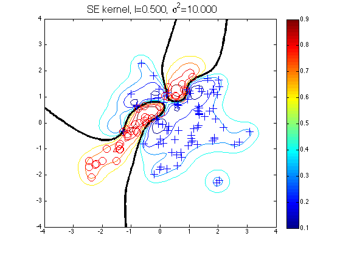
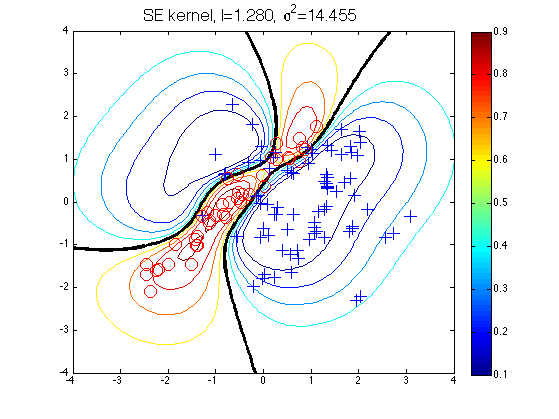

n1=80; n2=40;
S1 = eye(2); S2 = [1 0.95; 0.95 1];
m1 = [0.75; 0]; m2 = [-0.75; 0];
randn('seed',17);
x1 = chol(S1)'*randn(2,n1)+repmat(m1,1,n1);
x2 = chol(S2)'*randn(2,n2)+repmat(m2,1,n2);
x = [x1 x2]';
y = [repmat(-1,1,n1) repmat(1,1,n2)]';
[t1 t2] = meshgrid(-4:0.1:4,-4:0.1:4);
t = [t1(:) t2(:)];
loghyper = [0; 0];
learnedloghyper = minimize(loghyper, 'binaryLaplaceGP', -20, 'covSEiso', 'cumGauss', x, y);
loghypers = {[log(0.5); log(10)], learnedloghyper};
for i=1:numel(loghypers)
loghyper = loghypers{i}
prob = binaryLaplaceGP(loghyper, 'covSEiso', 'cumGauss', x, y, t);
figure;
contour(t1,t2,reshape(prob,size(t1)),[0.1:0.1:0.9]);
hold on
contour(t1,t2,reshape(prob,size(t1)),[0.5], 'linewidth', 3, 'color', 'k');
plot(x1(1,:),x1(2,:),'b+','markersize',12)
plot(x2(1,:),x2(2,:),'ro','markersize',12)
str = sprintf('SE kernel, %s=%5.3f, %s=%5.3f', ...
'l', exp(loghyper(1)), '\sigma^2', exp(loghyper(2)));
title(str, 'fontsize', 16);
colorbar
end
Function evaluation 6; Value 4.131227e+01Function evaluation 10; Value 4.119557e+01Function evaluation 13; Value 4.096067e+01Function evaluation 17; Value 4.077376e+01Function evaluation 20; Value 4.077363e+01
loghyper =
-0.6931
2.3026
loghyper =
0.2467
2.6710
 